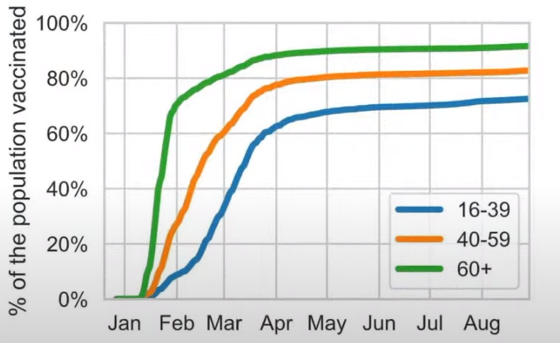
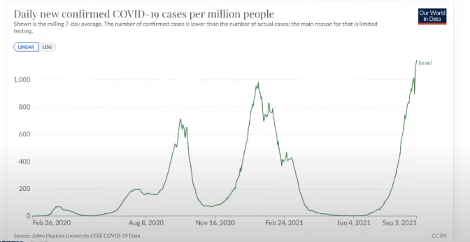
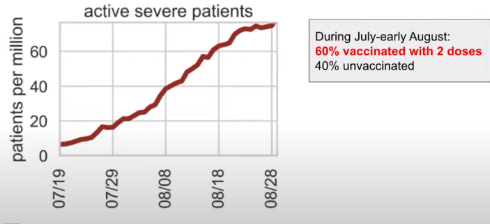
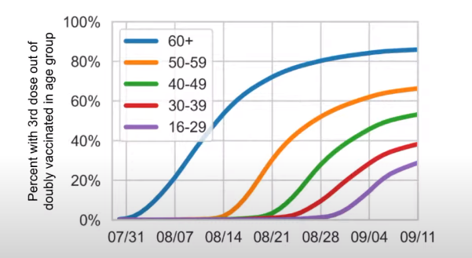

Covid Vaccines Overview
Wei Wang
Covid-19 Facts
Definitions
- SARS-CoV-2
COVID-19
In 2019, a new coronavirus was identified as the cause of a disease outbreak that originated in China. The virus is now known as the severe acute respiratory syndrome coronavirus 2 (SARS-CoV-2). The disease it causes is called coronavirus disease 2019 (COVID-19).
How dangerous is it?
- Early data from China: 3.4% case fatality rate
- Mathematical models have suggested that 40–81% of the world population could be infected, and have lowered the infection fatality rate to 1.0% or 0.9%
- The infection fatality rate of COVID-19 can vary substantially across different locations, depends on:
- Population age structure
- Medical treatments available
- Health situation
How dangerous is it? (continued)

About Asymptomatic Transmission

- The theory of asymptomatic transmission is yet to be proven
- Only peer reviewed study
- Reference
How reliable are the metrics?
Where are numbers come from?

It’s all about tests, rights? Look at this

- 07/21/2021: Lab Alert: Changes to CDC RT-PCR for SARS-CoV-2 Testing
- EUA as well?
- Removal Lists of Tests That Should No Longer Be Used and/or Distributed for COVID-19: FAQs on Testing for SARS-CoV-2
- Near 300 tests have been recalled!
More about PCR tests


- https://odysee.com/@EduardoCorrochio:4/kary-mullis-explains-the-pcr-test:e
- “If you do it well, you can find amlost anything in anybody.”
- “If you can amplify one single molecule, up to something that you can really measure which PCR can do. Then there’s just very few molecules that you don’t have at least one single one of them in your body.”
- Jefferson meta-analysis
US Monthly Total Death Trend(CDC data)
 https://colab.research.google.com/drive/1JTYIltXHUiz7nvdv_1ZwpW6trveh63Ke?usp=sharing
https://colab.research.google.com/drive/1JTYIltXHUiz7nvdv_1ZwpW6trveh63Ke?usp=sharing
Censored Treatment researches/studies
- Dr. Vladimir Zelenko Protocol
- https://www.sciencedirect.com/science/article/pii/S0924857920304258 This paper was the FIRST in the world to demonstrate an 84% reduction in hospitalization and death if COVID-19 was treated early in the prehospital setting. These world class scientists did it for free for the sake of humanity. God should bless them for all eternity.
- Dr. Zelenko on Israeli Rabbinic court
- Dr. Peter A. McCullough
- AAPS Early Treatment Saves Lives
- Dr. Harvey Risch (Yale) Hydroxychloroquine (HCQ) produced a 34% reduction in risk of death, while HCQ and azithromycin produced a 29% reduction in risk of death in hospitalized patients with COVID-19.
- Dr. Richard Bartlett
- (Budesonide Nasal Steroids) - reports 100% success rate when started early.
- [Dr Eleftheria Atalla](https://www.mdpi.com/2076-0817/10/1/8)
- (Brown University, R.I.) - treatment of critically ill seniors in Long Term Care Facilities with anticoagulants who had elevated markers of inflammation were 84% less likely to die. [Pathogens 2021, 10, 8. [https://dx.doi.org/10.3390/pathogens10010008](https://dx.doi.org/10.3390/pathogens10010008)]
Censored Treatment researches/studies(Continued)
- Ivermectin
- India filed a criminal complaint against WHO
- Bret Weinstein and dr. Pierre kory
- Meta-analysis on american therapeutics Moderate-certainty evidence finds that large reductions in COVID-19 deaths are possible using ivermectin. Using ivermectin early in the clinical course may reduce numbers progressing to severe disease. The apparent safety and low cost suggest that ivermectin is likely to have a significant impact on the SARS-CoV-2 pandemic globally.
- HCQ Retracted paper on HCQ
- RECOVERY TRIAL sponsored by BILL and MELINDA GATES FOUNDATION, OXFORD UNIVERSITY and GLAXOSMITHKLINE
- Used POISONOUS and LETHAL doses of HCQ (2400mg/day). Death rate was over 25% of participants.
- Results—1,542 patients of these 396 patients (25.7%) who were in the high dose Hydroxychloroquine arm, died.
Censored Treatment researches/studies(Continued)
- Others
- Comprehensive nutritional study
- Used Vitamin A (100,000 IU/day), Vitamin C(1,000mg/hour during waking), Vitamin D (50,000 IU/day), and Lugol’s Iodine(25mg).
- One hundred seven out of 107 patients fully recovered within seven days of treatment.
- Vitamin D study
- National Health and Nutrition Examination Survey studies
- The CDC has known for at least two decades that Americans are deficient in the following key immunological nutrients: Vitamin A (35-45% of the population is deficient), Vitamin C (37-46%), Vitamin D (65-95%), Vitamin E (60-84%), and Zinc (11-15%).
- Comprehensive nutritional study
Covid Vaccine Facts
Traditional vaccines
 Reference:
Reference: Covid mRNA vaccines

How efficacy value is calculated
- Relative Risk reduction(What’s been told)
 Keep in mind when you read this data, there is no reliable way to tell who really got COVID
Keep in mind when you read this data, there is no reliable way to tell who really got COVID
- Absolute risk reduction

Put data together

Understand phases of clinical trails
- Phase I - Determine Safety. If you can’t find a safe dose, then it doesn’t matter if it works. Small in numbers & healthy people.
- Phase II (aka Exploratory Trials) - If a Safe Dose is Found - Does the Drug Work?
- Phase III - How does the drug compare with that already used for the problem?
- Phase IV - Post Marketing Surveillance Studies (aka Pharmacovigilance).
How vaccine had been developped

My personal VAERS data analysis
- Be noted only about 1-10% are reported, see Harvard VAERS study
https://colab.research.google.com/drive/1RdP7fdF6iUPWRmxfJ4eiXR9v-i3EVUUB?usp=sharing


UK Data


Israel

Singapore

US latest Vax development
- CDC director overrules advisers and approves Pfizer booster shots for millions of people in high-risk jobs
- “The highly unusual move comes after the advisory board on vaccines voted nine to six against giving booster shots to teachers, health care workers and others who come in close contact with people in their jobs.”
- Oct. 4th 2021, Affidavit of Army Lieutenant Colonel Theresa Long M.D


- Texas governor signed bill forbiden Vax mandate
VigiAccess data (WHO)

Spike protein itself is toxic
Dr. Bhakdi on Covid mRNA Vaccine and Blood clots & Autoimmune diseases
Dr. Robert Malone on Dark Horse Podcase interview

- https://odysee.com/@blasiusgeorge:9/Robert-Malone---Dark-Horse-Podcast-Interview:b
- From 35:52
- Dr. Bret Weinstein, Was a professor of biology at Evergreen State College
- Dr. Robert Malone, inventor of mRNA vaccine technology
- Steve Kirsch, tech entrepreneur
mRNA bio distribution

Dr. Ryan Cole seeing cancer spike in his lab
Long term adverse reaction: Official answer is Unknown
- http://www.uphs.upenn.edu/cep/COVID/mRNA%20vaccine%20review%20final.pdf
- Research polio vaccine in history, mass adverse reaction(Cancer, autoimmune, etc) are discovered after 5-10 years
- Got to any medical library and search with keyword SV40 virus
- Dolores Cahill’s forcast(Biography), vieo link
- “More harm of these mRNA vaccines will happen in the years to come”
- “Any one who’s over 70, who gets one of these mRNA vaccines will probably sadly die within about two to three years”
- “And I would say anyone who gets the mRNA injection, no matter what age you are, your life expectancy will be reueced to you know, die if you’re in your thirties within five to ten years.”
- Infertity is the major one
- Cancer by design
- Autoimmune disease by design
FDA Vaccines and Related Biological Products Advisory Committee-8/17/2021


Real-world effectiveness of Covid-19 Vaccines
- Youtube Link
- Professor Jonathan Sterne, University of Briston, UK
- There are methodological issues in estimating Covid-19 vaccine effectiveness
Booster protection against confirmed infections and severe disease - Israel data
- Dr. Sharon Alroy-Preis
- Vaccination rate 
- Israel now experiences it’s highest levelof infection 
- Severe active caess increased > 10-fold in a month 
- 3 dose rate youtube 
- Myocarditis reports data( check other story )
Nobody is paying attention to the elephant in the room(All-cause mortality)
- Steve Kirsch, Early Treatment Fund
- Youtube

Nobody is paying attention to the elephant in the room(All-cause mortality) - continued
- Gaming in Pfyzer phase 3 trial

Nobody is paying attention to the elephant in the room(All-cause mortality) - continued
Why hasn’t the FDA investigated the Maddie de Garay trial frad?
- She was in Pfizer p3 trial and she is now paralyzed for life
- Was not reported in Pfizer report
- No FDA/CDC investigation
- 0 Compensation
How Covid Vaccine impact shools?
- What college require te Covid-19 Vaccine? https://www.bestcolleges.com/blog/list-of-colleges-that-require-covid-19-vaccine/